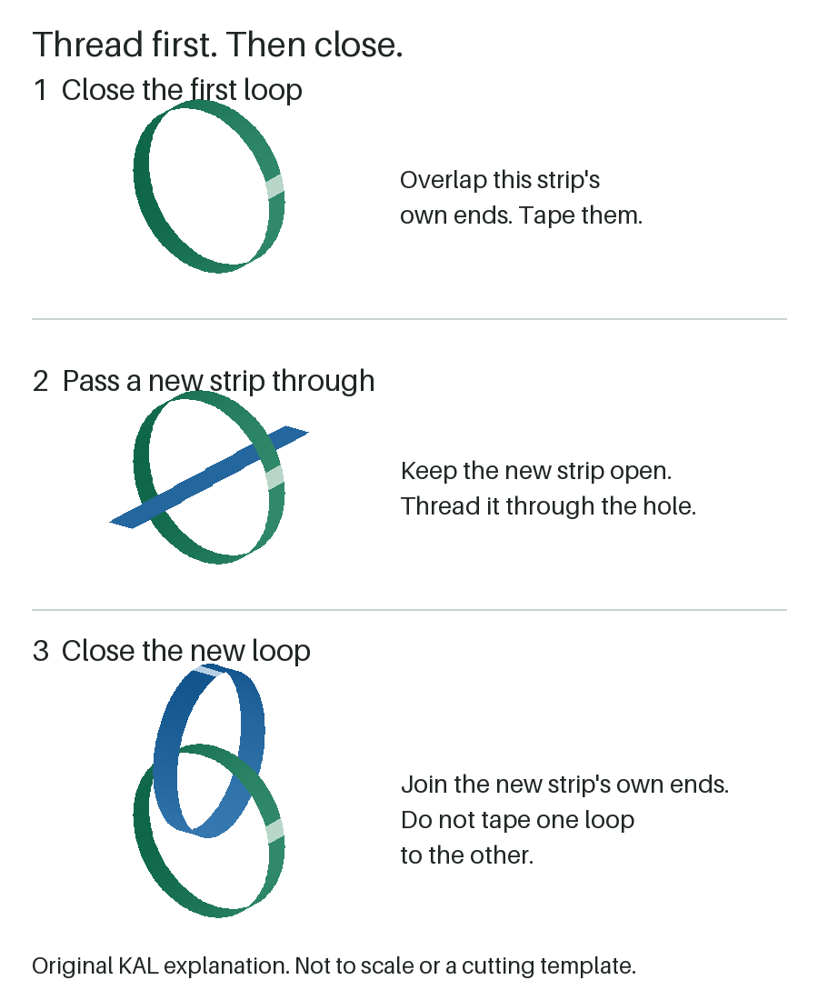

Paper + tape | Adult-guided
Make a paper chain
Turn two strips into linked loops. Then decide: add another, compare, or stop.
Research-backed; not family-tested by Kid Activity Lab.
Gather: ordinary paper, tape and scissors for the adult. Use a clear tabletop, with room to lay the chain down.
Adult setup: cut strips roughly 15 cm long and 2 cm wide (about 6 by 3/4 inches). This is our starting suggestion, not a tested best size. Check that a strip curls and its ends overlap without forcing; adjust if needed. Prepare tape pieces and put scissors away.
First, link two loops
- Curl one strip. Overlap its own ends and tape them together to close the first loop.
- Pass a new, open strip through the hole in that loop.
- Bring the new strip's own ends together and tape them. Now the two loops are linked, not taped to each other.
- Repeat through the newest loop, or finish with two.
Say: "Can you put this strip through that loop?" Stay beside your child; hold the loop or handle the tape as needed. Choosing a strip or watching also counts as taking part.
Keep it on the table: no wearing chains or hanging them across walkways. Stop if paper or tape goes in a mouth, the chain is pulled around a body, or play becomes unwanted or hard to control.

Loops not joining?
Two separate circles? Use a fresh open strip, pass it through the last loop, then close it. Closing it first leaves nothing to thread.
Tape lifting or paper tearing? The adult can reattach the same joint. For a free build, replace torn paper or finish. In the one-sheet trial below, repair with the original pieces or end that attempt; no extra paper.
Joining feels too fiddly? Let the adult hold and join while the child chooses, counts or watches. Skip tape handling if the feel bothers them. Offer the same roles to siblings; stop if everyone needs more help than you can give.
Finish: lay the chain down gently and notice which loop connects to which. Gather all strips, tape and offcuts. No timer is needed; setup, play time and cleanup effort have not been measured.
Optional: how long can one sheet reach?
After a linked start, choose these rules together. This is our version of a one-sheet challenge, not a universal rule set.
- Use one sheet per attempt. For comparison, start each attempt with the same size and type of paper. The adult still cuts; choose strip sizes together.
- Make interlocking loops only. Tape closes each loop; it does not extend the paper or join flat strips end-to-end.
- Lay chains side by side from a common starting point, without stretching. Which reaches farther? More links need not mean more length if their sizes differ.
- Repair only with that attempt's paper, or stop. A fresh sheet starts a new attempt. Changing the rules makes a different challenge.
No race, ruler or printer needed. Prefer a target instead? Try the book-reach mission; it uses the same loops without the one-sheet rule.
Sources and what we haven't tested
WTTW's Paper Chain supports the thread-then-close sequence and an untimed assisted option. Little Bins' paper-chain challenge supplies the one-sheet comparison idea. Teachers are Terrific's challenge illustrates why the meaning of "chain" needs explicit rules. Sources checked September 23, 2026.
Strip dimensions, roles, rescue suggestions, limits and comparison rules here are KAL editorial choices. We have not physically or family-tested this version. Age alone does not establish fit; dexterity, time, enjoyment, learning, mess and safety outcomes remain unknown.